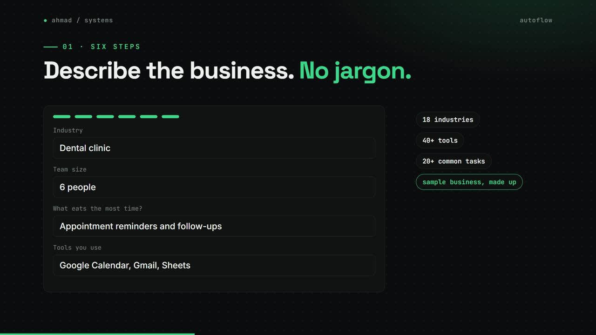
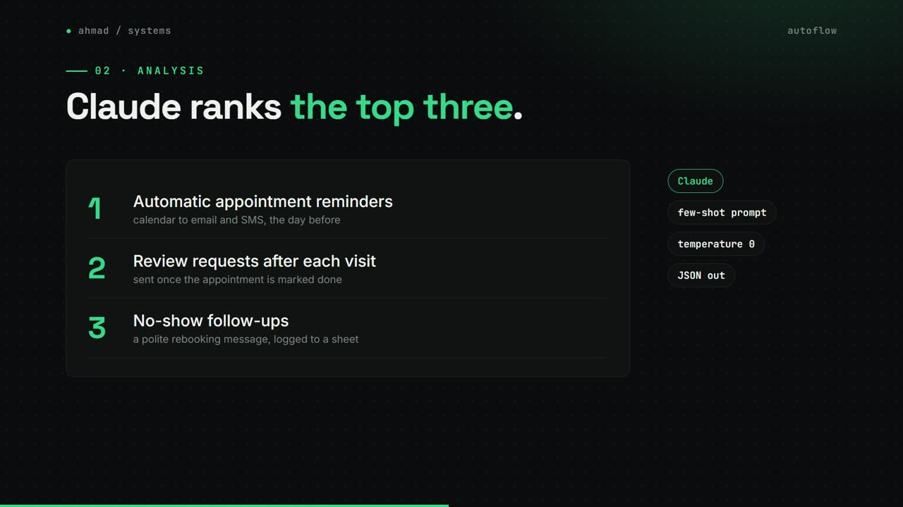
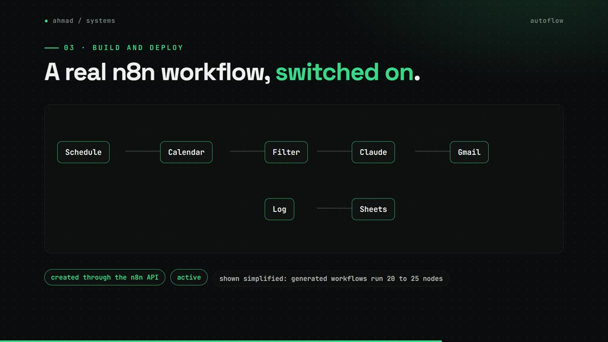
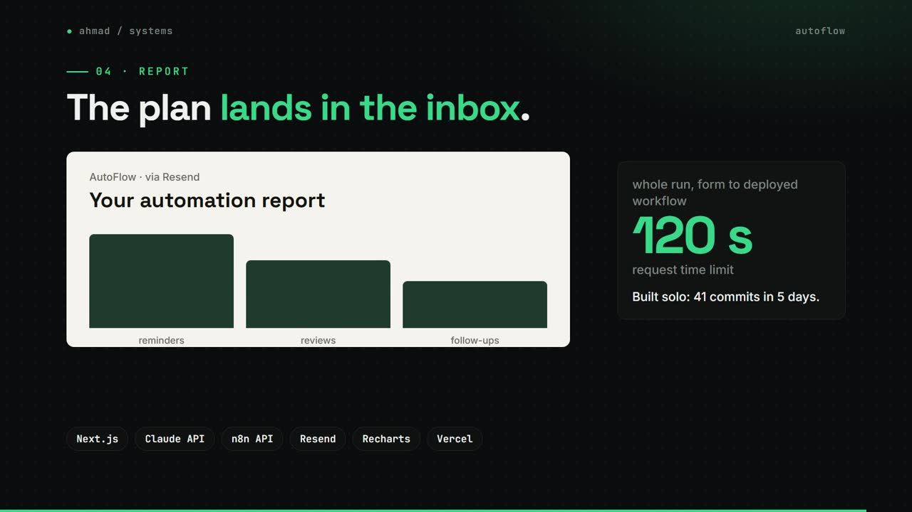

AutoFlow
Describe your business in a 6-step form; get a deployed n8n workflow and an emailed report.
my role Built it solo: 41 commits in 5 days.
The problem
Small businesses know they should automate but not where to start, and turning an idea into a working workflow usually takes a consultant and days of back and forth.
How it works
- A 6-step form captures the industry, team, tools and the tasks that eat time.
- Claude ranks the top three automation opportunities with a few-shot prompt at temperature 0.
- It writes an n8n workflow for the best one, built from tested templates.
- The n8n API creates and turns on the workflow.
- Resend emails an HTML report, and the results page shows the analysis in charts.
What changed
- 6form steps
- 9workflow templates
- 120 stime limit for the whole run
- 41commits in 5 days
What I built
- The Next.js app, the Claude prompt and the JSON handling.
- Nine workflow templates the generator builds from.
- The live deploy to n8n and the HTML email report.
Stack
- Next.js
- TypeScript
- Claude API
- n8n API
- Resend
- Recharts
- Vercel
Stills



